Regresar
Regresar
Descubre sobre nuestro estado de Morelos.
¡Es una actividad muy interesante!
Amigoo!!! dile a tu papás que te acompañen a leer es mas divertido!!
Morelos es uno de los treinta y un estados que, junto con la Ciudad de México, forman los Estados Unidos Mexicanos. Su capital y ciudad más poblada es Cuernavaca
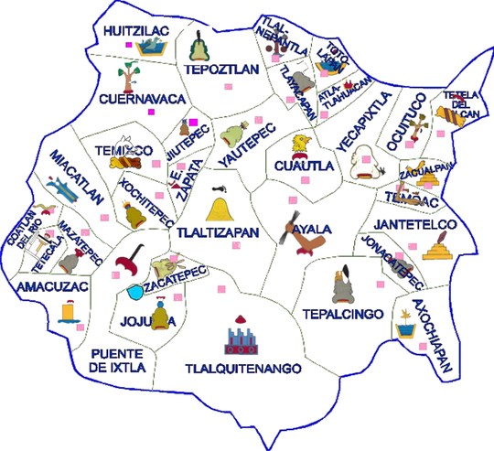
Escudo de Morelos
Se observa una terraza verde de la que crece una mata de maíz color oro; entre ella y la estrella en la corona puede leerse el lema "Tierra y Libertad" en una franja color plata, del mismo tono, enmarcado el emblema,
está una banda con la leyenda "La tierra volverá a quienes la trabajan con sus manos."; este marco se complementa con un filo verde al interior y otro rojo al exterior del escudo.
En él se sintetiza la fuerza de los ideales revolucionarios al servicio de mejores condiciones de vida para el pueblo.
Toponimia de Morelos
LOS MUNICIPIOS DEL ESTADO
AMACUZAC
Amacuzac viene del Náhuatl Amaticoztitlán, que se compone de: ama-ti: amati(e), coz-tik: color amarillo; atl: agua, k, contracción de ko advervio: lugar, tla: abundancial, significa "lugar donde abundan los amates amarillos".
Escudo:
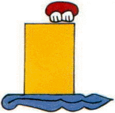
ATLATLAHUCAN
Atlatlahucan, originalmente debe escribirse Atlatalukan; etimológicamente proviene de a-atla: "agua"; tlatlau-ki: "color rojo, ocre o bermejo" y kan: "lugar propio"; quiere decir: "Donde hay agua rojiza o colorada", la cual en la actualidad es la que almacenan en un jagüey en tiempo de lluvias.
Escudo:
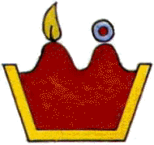
AXOCHIAPAN
Axochiapan. Su etimología correcta es axochi-tl: "flor acuática o nenúfar", por su radical a-tl: "agua", apan: "lago, arroyo, manantial", que también se deriva de a-tl: "agua" y pan "sobre", quiere decir: "En laguna nenúfares o flores de agua", como efectivamente así es; pues cuando esta en floración por el mes de agosto semeja una alfombra de flores blancas. Su nombre se origina en una laguna aledaña, embellece el paisaje con flores acuáticas: nenúfares.
Escudo:
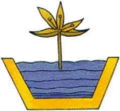
AYALA
Toponimia de Mapachtlan. Que proviene del Náhuatl mapache (especie de tejón, pequeño con cejas blancas y orejas anchas) y tlan (partícula abundancial) lo que en conjunto quiere decir "Lugar en donde hay muchos mapaches o lugar donde abundan los mapaches".
Municipio de Ayala, Morelos, anteriormente San Francisco Mapachtlan, del cual se conserva su nombre y dibujo (glifo) en la documentación oficial del municipio.
Escudo:
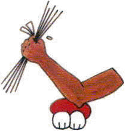
COATLÁN DEL RÍO
Coatlán del Río. Partiremos del origen del nombre Coatlán del Río, que es una combinación de palabras prehispánicas y castellanas. Los orígenes de la palabra Coatlán se remontan a la época prehispánica. La palabra Koatlán, como se escribe originalmente, viene de los vocablos náhuatls "Koatl" que significa serpiente y "Tlán" que quiere decir abundancia, por lo que Coatlán significa "Lugar donde abundan las culebras".
Escudo:
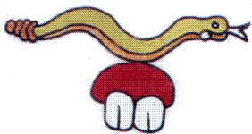
CUAUTLA
Por fonetismo: Arboleda o bosque. (Ing. Vicente Reyes, Lic. Cecilio A. Róbelo y Aragón). Otro significado es "Lugar de águilas".
Escudo:
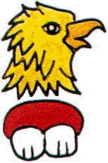
CUERNAVACA
Cuauhnahuac
Cuauitl (árbol) nahuac (junto) = "junto a los árboles". Esta es la versión aceptada por el H. Ayuntamiento.
Cuauh-nahua-c
Ccuahuitl (árbol) nahuac (alrededor, rodeado de) c ó ca (en) = "en lo rodeado de árboles". Versión según: Toponimia de Oaxaca, crítica etimológica.
Cuauh-nahua-c
Cuauhitl (árbol) nahuac (cerca o junto) = "cerca o junto a los árboles". Versión según: Nombres Geográficos Mexicanos, de Lic. Cecilio A. Robelo.
Escudo:
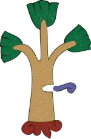
EMILIANO ZAPATA
Artículo 7°. La descripción del escudo heráldico del municipio es como sigue: un busto con la figura sombreada del General Don Emiliano Zapata Salazar, de frente sosteniendo una carabina en posición vertical con su mano derecha.
Escudo:
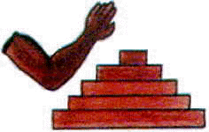
HUITZILAC
Huitzilac se escribía Uitzilak y quiere decir: "En agua de colibríes o chupamirtos", llamados huichichiquis que pululan en sus barrancas; este topónimo proviene de uitzi-tzillin: "pájaro mosca o colibrí"; a-tl: "agua" y K contracción de ko que es adverbio de "lugar".
Escudo:
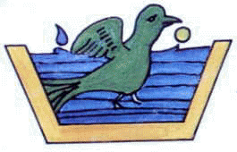
JANTETELCO
Jantetelco debe escribirse XANTETELCO, siendo su etimología: Xamitl: "adobe", Tetel-li: "promontorio", cerro artificial que oculta alguna pirámide de Teocalli y Ko de "lugar", se traduce como: "El montón de los adobes
Escudo:
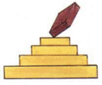
JIUTEPEC
El nombre de Jiutepec es la castellanización del viejo nombre en náhuatl de la población: Xiuhtepec.
Al respecto el cronista municipal Don Luis Gurza y Villarreal nos dice que el nombre de Xiuhtepec, de origen náhuatl, se compone de tres palabras que, conforman el sistema utilizado por los indígenas que hablan esta lengua, se estructura en la siguiente forma:
"Xiuh" de Xihuitl, palabra que tiene varios significados según los elementos, gráficos y fonéticos, con los cuales este combinada. Por ejemplo, puede ser turquesas, pasto o hierba, azul y también año y piedras preciosas.
"Tepe" que se toma de Tepetl que significa cerro. "C" que es la posposición que se usa en náhuatl como sufijo de los nombres acabados en Tl, últimas dos letras que se substituyen con la letra C que significa "En", así Tepec, significa "En el cerro". Por lo tanto la palabra Xiuhtepec significa: En el cerro de las piedras preciosas.
Escudo:
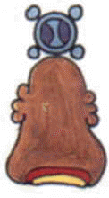